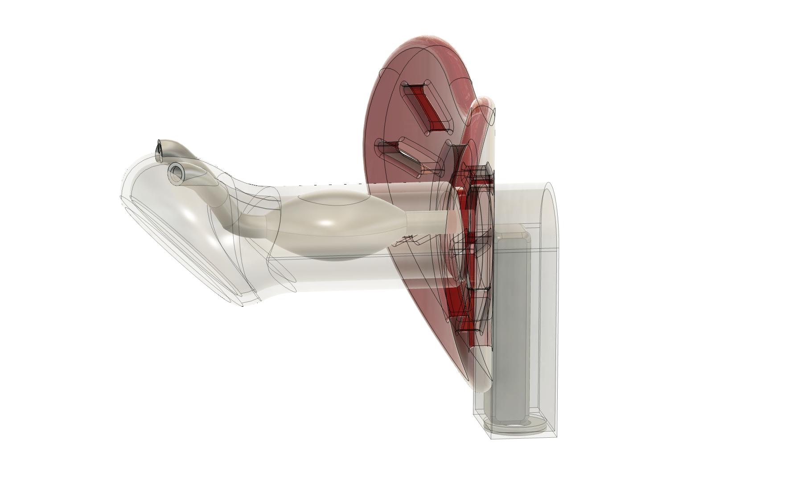
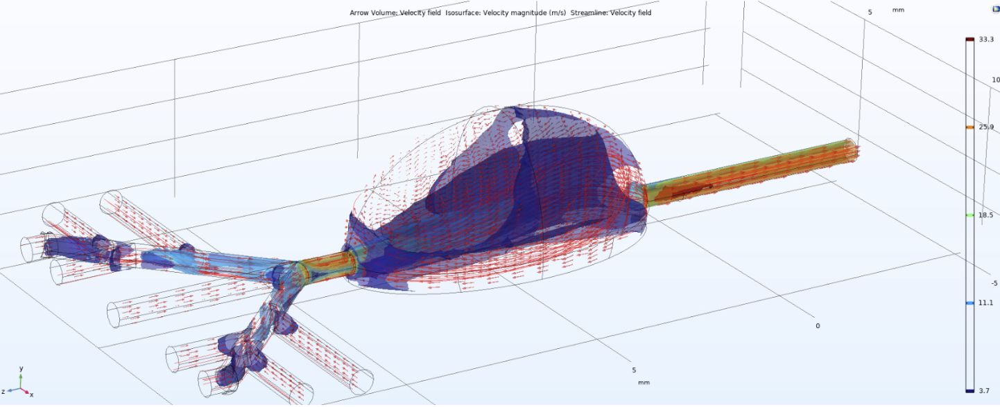
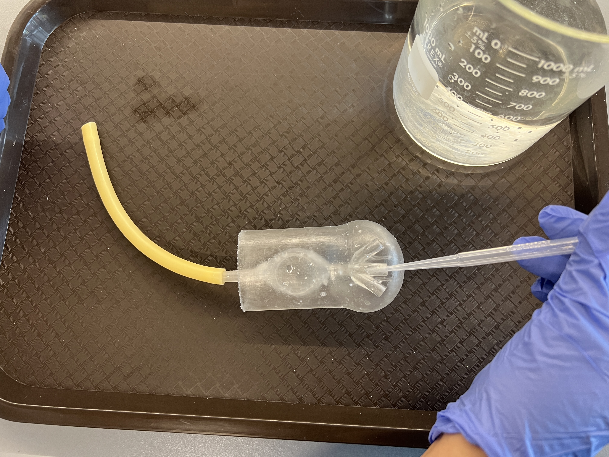

GERDSense: Gastroesophageal Reflux Disease Detection
A comfortable, non-invasive pacifier that passively transports saliva samples to an external pH sensor for continuous GERD monitoring.

Summary
GERDSense is a pacifier-integrated millifluidic system that non-invasively detects infant gastroesophageal reflux by transporting saliva/reflux samples to an external reservoir housing a pH sensor. Fluid motion is powered passively by infant non-nutritive sucking, capillary action, and a miniature pump, enabling comfortable, continuous monitoring at home and clinical settings.
Problem & Approach
Problem: Infant GERD symptoms are non-specific, and current diagnostics (pH probes, Bravo capsules) are invasive and ill-suited for continuous use.
Our Approach: Build a comfortable pacifier that quietly samples oral fluid and routes it to an external pH sensor. We selected duckbill valves after research, and refined channel geometry and reservoir volume through iterative COMSOL simulations and clinician feedback.

Mechanism (How it works)

Millifluidic Insert: system of microfluidic channels are connected to the roof of the pacifier teat to collect oral samples through multiple inlets and merges flow into a compressible “pump" reservoir that feeds downstream to a pH sensors
Passive Transport: non-nutritive sucking and capillary forces pull fluid through the channels (strategically placed duckbill valves maintain one-way movement)
External pH Sensor: tubing routes saliva sample to a small chamber with a pH sensor for continuous reading that reports live feedback via an external monitor
Testing & Results
Simulation (COMSOL)
- Laminar flow confirmed with smooth velocity fields and no backflow or stagnation.
- Structural analysis under ~4–9 kPa oral pressures showed safe elastic deformation
- Iterative geometry changes (larger reservoir, filleted turns, wider inlets/outlets) improved throughput and anatomical fit.
Prototyping & Integration
- Scaled-up model validated flow concepts and valve choices (duckbill vs. umbrella).
- 3D-printed millifluidic prototypes verified channel width and “button” function.
- Alternative placements of the microfluidic system were evaluated to determine location of maximum pressure
Project Files
Files may take a few seconds to load depending on size.